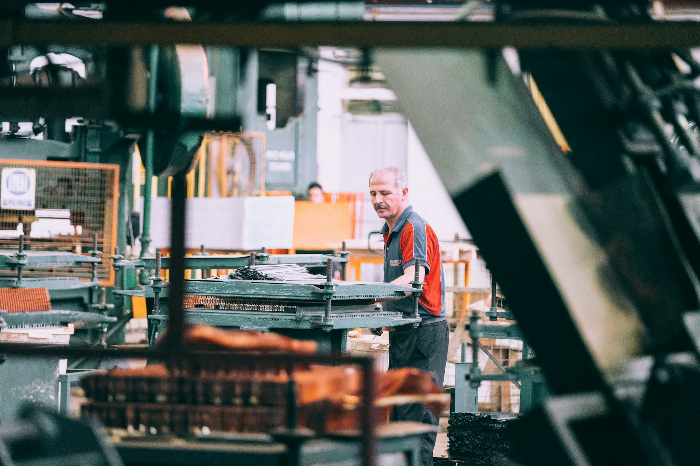
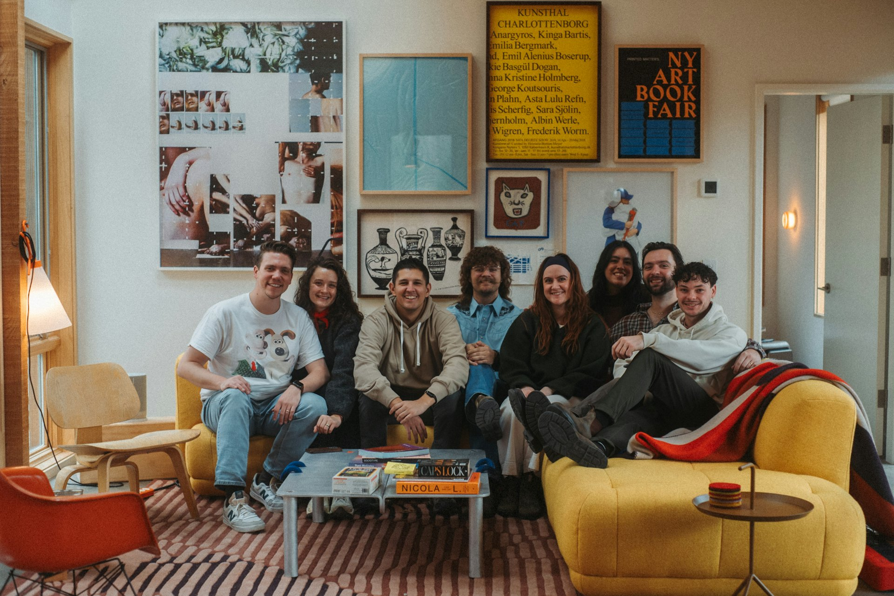

Legacy
What will be better because of this work?
Executive search & talent consultancy
Formidable helps founders, CEOs, and family offices find the leaders who build what lasts: the cities, industries, institutions, and living systems a good society runs on.
What Formidable does
Formidable is an executive search and talent consultancy. We recruit senior leaders, build teams, provide fractional executives, and design organizations for people whose work shapes public life.
Where we work
Each of these fields builds something people will depend on long after today's leaders move on. That is why the leadership decisions inside them matter so much.

Parks, waterfronts, housing, and the places where public life actually happens.
Explore sector
Rebuilding the capacity to make things, at home and at scale.
Explore sectorThe companies and coalitions helping communities adapt, decarbonize, and endure.
Explore sector
Organizations working to make self-government work better for everyone.
Explore sector
Technology built to bring people closer, not to keep them scrolling.
Explore sector
Protecting and restoring the living systems everything else depends on.
Explore sectorHow we think
Most search starts with the résumé. Ours starts with the work. Nathaniel Koloc's framework for fulfilling careers shapes every search: how we define a role, how we pitch it to people who are not looking, and how we judge who will thrive in it.
What will be better because of this work?
What craft will this person keep getting better at?

What choices does this role earn them?
Services
One critical hire, found with care and closed with conviction.
Learn more IISeveral hires at once, designed as a team, not a list.
Learn more IIISenior leadership now, while the permanent hire takes shape.
Learn more IVThe structure that lets good people do great work.
Learn moreSelected clients
“…what a world would look like with abundant creative deployment of capital that clearly expresses a unique point of view for public benefit.”
A principle we hold
Finding candidates can be handed off. Choosing the person who will carry your mission cannot. Formidable runs the search so you can spend your time where it counts: on the final judgment.
And every candidate, hired or not, should leave the process glad they took the call. How you treat the people you do not hire is your reputation in the market.
FAQ
Formidable is an executive search and talent consultancy. It recruits executives, builds teams, provides fractional C-suite leaders, and designs organizations for founders, CEOs, and family offices.
Six: Built Environment & Urban Development, Manufacturing & Industrials, Climate & Resilience, Democracy Reform & Policy Innovation, Cozytech, and Ecology & Conservation.
Nathaniel Koloc, an executive recruiting partner who has led more than 50 executive searches over the past decade and co-founded ReWork, an impact-careers company acquired by Koya Leadership Partners in 2018.
Email hello@formidable.services with a few lines about the role and your organization. The first conversation is about what the role needs to accomplish.
Tell us about the role, the team, or the organization you are trying to build. Every conversation starts with what you want the work to leave behind.